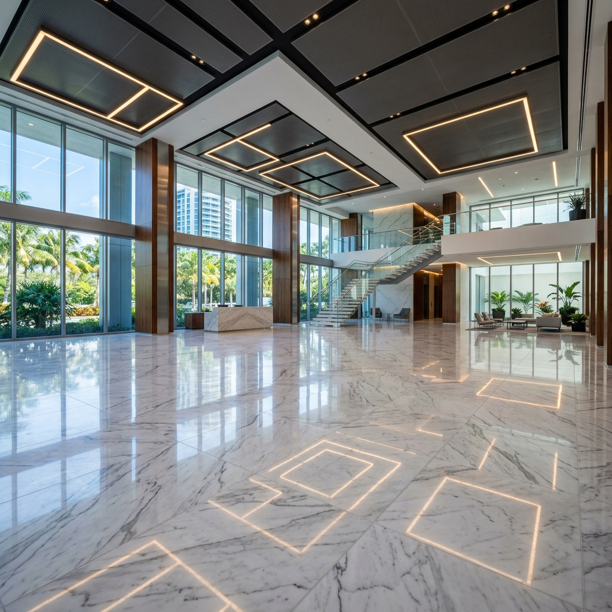
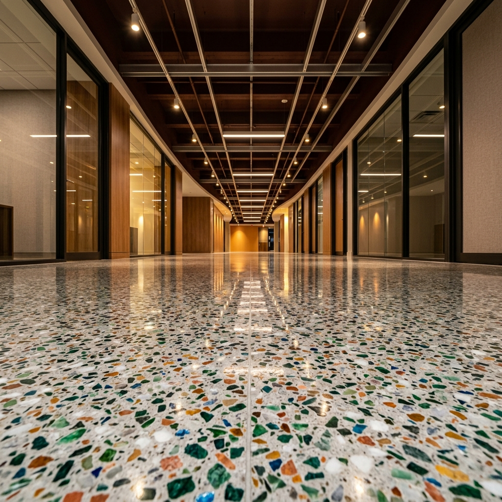
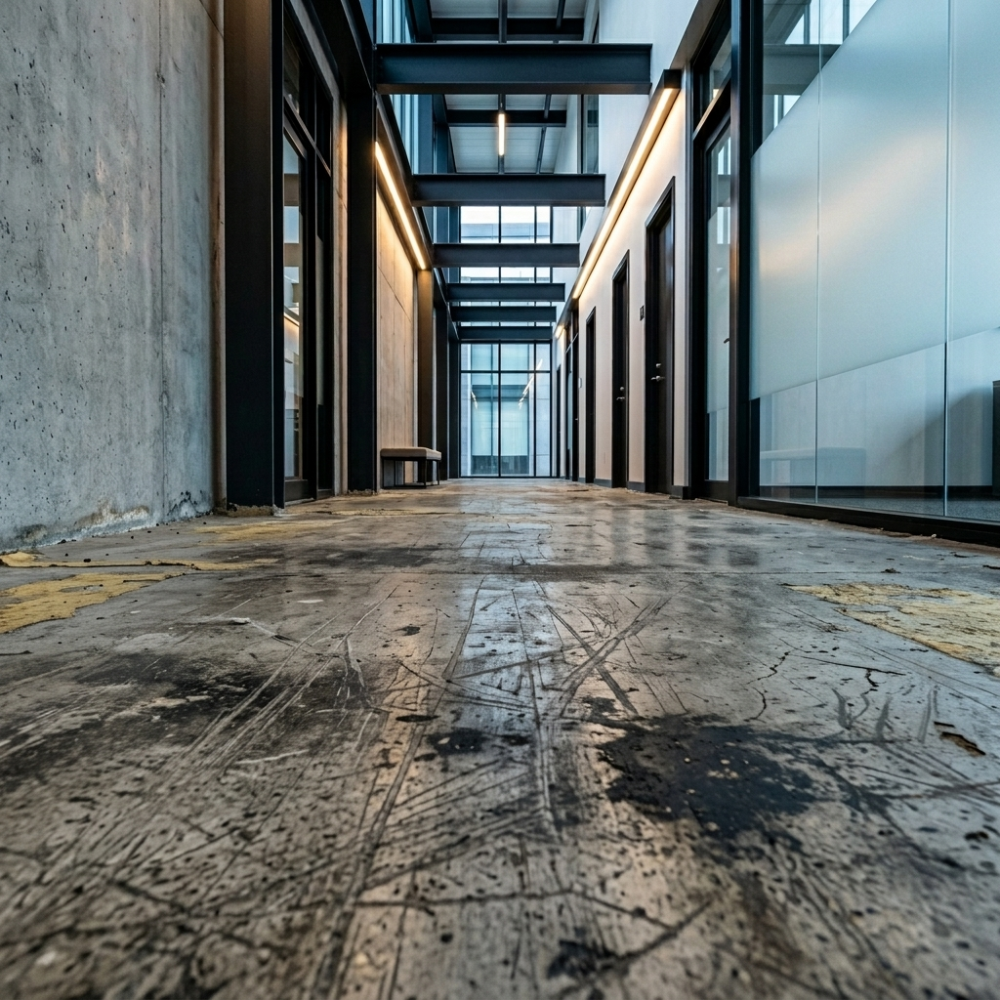

In This Guide
- What Is Commercial Floor Polishing?
- Types of Commercial Floors We Polish in South Florida
- The Commercial Floor Polishing Process: Step by Step
- How Long Does Commercial Floor Polishing Take in Miami?
- How Often Should Commercial Floors Be Polished?
- Why South Florida Properties Need Polishing More Frequently
- How to Choose a Floor Polishing Company in Miami
- Commercial Floor Polishing Cost in Miami
- Frequently Asked Questions
Commercial floor polishing in Miami is not a cosmetic luxury — it is an operational necessity. South Florida's subtropical climate subjects commercial floor surfaces to conditions that most U.S. markets never experience: year-round humidity above 70%, intense UV exposure through floor-to-ceiling glass, salt-carried air in coastal properties, and grit tracked in from exterior hardscape. These factors accelerate surface degradation on concrete, marble, terrazzo, and natural stone at rates significantly higher than national averages.
For property managers and facility professionals across Miami, Fort Lauderdale, and Broward County, the condition of a building's floors is one of the first things tenants, visitors, and prospective clients notice. Research from the International Facility Management Association (IFMA) indicates that flooring condition is the single most cited factor in tenant satisfaction surveys related to common-area upkeep. Dull, scratched, or hazy floors communicate neglect — regardless of how well the rest of the property is maintained.
Professional floor polishing in South Florida is fundamentally different from routine floor cleaning. While cleaning removes surface contaminants, polishing is a mechanical diamond abrasion process that restructures the floor surface itself — restoring reflectivity, closing pores, and hardening the substrate against future wear. It is a floor restoration process, not a janitorial service.
This guide covers every aspect of the commercial floor polishing process — from surface types and step-by-step methodology to realistic timelines, cost factors, and what to look for in a qualified floor polishing company Miami property managers can trust. Whether you manage a single office building or a multi-property portfolio, this resource is designed to help you make informed decisions about floor polishing service Miami properties require.
What Is Commercial Floor Polishing? (And How It Differs from Floor Cleaning)
Commercial floor polishing is a multi-stage mechanical process that uses progressively finer diamond abrasives to grind, hone, and refine a hard floor surface. The result is a floor with increased density, enhanced light reflectivity, and superior resistance to moisture penetration, staining, and foot-traffic wear.
This process is categorically different from floor cleaning. Cleaning addresses what sits on the floor — dirt, residue, surface contamination. Polishing addresses the floor itself — its structural surface profile, porosity, and finish grade. A floor that appears dull after professional cleaning does not need more cleaning; it needs surface restoration through mechanical polishing.
The key surface types that respond to diamond polishing include:
- Concrete — the most common substrate in modern commercial construction
- Marble — prevalent in lobbies, elevator cabs, and executive corridors
- Terrazzo — a South Florida signature, found in hundreds of mid-century and contemporary commercial properties
- Natural stone — limestone, travertine, and slate surfaces requiring specialized treatment
Understanding this distinction is critical for property managers evaluating hard floor maintenance options. Misapplying cleaning protocols to a surface that needs polishing wastes budget and delays the actual correction. Conversely, scheduling full polishing when a maintenance buff would suffice is equally inefficient.
Floor Buffing vs. Floor Polishing: What's the Difference?
This is one of the most common points of confusion among facility teams — and the reason why many properties receive the wrong treatment for their floor condition.
Floor buffing is a single-step surface burnishing process. A rotary machine with a synthetic pad is used to create temporary surface gloss through friction and heat. Buffing does not alter the floor's structural surface profile. It cosmetically improves appearance for a short period — typically days to weeks — before the effect fades. Buffing is appropriate for maintenance between polishing cycles on surfaces that are already in good condition.
Floor polishing is a multi-step diamond grinding process that mechanically refines the surface structure of the floor. Diamond tooling progresses through increasingly fine grits — typically from 50-grit through 3000-grit — physically transforming the floor surface from rough and porous to dense, sealed, and highly reflective. The result is permanent until worn down by traffic and environmental exposure over years.
The practical difference:
- Buffing addresses the top 0.001mm of the surface. Effect: cosmetic. Duration: days to weeks.
- Polishing addresses the top 1–3mm of the surface. Effect: structural. Duration: years.
Property managers who repeatedly buff a floor that needs polishing are masking a condition that continues to deteriorate. Recognizing when to transition from maintenance buffing to a full polishing cycle is a key competency in commercial property maintenance.
Types of Commercial Floors We Polish in South Florida
Each floor surface responds differently to polishing — and requires different equipment, tooling, chemistry, and technique. A qualified floor polishing company Miami facilities trust will maintain surface-specific protocols, not apply a universal process to every substrate.
Concrete Floor Polishing
Concrete is the most polished substrate in commercial environments, especially in Miami and Fort Lauderdale where modern office, retail, and co-working spaces frequently specify exposed polished concrete as a design element.
The process involves diamond grinding through a grit progression — typically starting at 30–50 grit for surface preparation and advancing through 100, 200, 400, 800, 1500, and 3000 grit for the final polish. A densifier (lithium silicate or sodium silicate compound) is applied mid-process to harden the concrete surface and reduce porosity. Final sealing protects against moisture penetration and staining.
Common applications: warehouses, modern offices, retail showrooms, co-working spaces, and institutional buildings across South Florida.
Marble Floor Polishing
Marble polishing in commercial settings involves three distinct stages: honing (removing scratches and wear patterns with coarse diamonds), crystallization (a chemical-mechanical process that hardens and glosses the surface), and final polishing (achieving mirror-level reflectivity without topical coatings).
Marble is a calcium carbonate stone — softer than concrete and highly susceptible to acid etching, scratching, and moisture absorption. South Florida's humid environment makes proper sealing after polishing essential for commercial marble surfaces.
Common applications: lobbies, elevator cabs, executive corridors, and reception areas in Fort Lauderdale and Miami commercial buildings.

Terrazzo Floor Polishing
Terrazzo holds particular significance in South Florida. Hundreds of commercial buildings constructed from the 1940s through the 1980s feature terrazzo flooring — a composite of marble chips embedded in a cement or epoxy matrix. Many of these floors have been covered with carpet or VCT tile over the decades, and restoring them is often dramatically more cost-effective than replacement.
According to the National Terrazzo and Mosaic Association, properly restored terrazzo can last 75+ years — making restoration a compelling economic alternative to new floor installation. The restoration process involves adhesive removal (if covered), crack and chip repair, full diamond grinding, and progressive polishing to achieve the desired sheen level.
Common applications: older commercial lobbies, hotel common areas, institutional buildings, and government facilities across Miami-Dade County and Broward County.

Natural Stone Floor Polishing
Limestone, travertine, and slate are commonly found in South Florida commercial properties — particularly in hospitality and high-end office environments. Each stone type has different density, porosity, and acid sensitivity, requiring tailored polishing approaches.
In Miami's humid climate, sealing considerations are critical. Natural stone is porous, and moisture vapor transmission from beneath the slab can cause efflorescence, discoloration, and adhesive failure if the stone is improperly sealed after polishing. A qualified floor polishing service Miami property managers rely on will evaluate substrate moisture levels and recommend the appropriate sealer type — impregnating sealers for breathability in high-moisture environments, or topical sealers for maximum surface protection in lower-moisture settings.
The Commercial Floor Polishing Process: Step by Step
Professional commercial floor polishing in Miami follows a disciplined, multi-stage process. Skipping steps or compressing the sequence produces inferior results that fail prematurely. Here is how a properly executed floor polishing project progresses:
Step 1 — Surface Condition Evaluation
Before any work begins, the floor surface must be thoroughly assessed. This floor condition evaluation documents the current state of the substrate: existing coatings, depth of wear, crack patterns, moisture conditions, staining, and prior treatments. This evaluation determines everything that follows — the correct grit sequence, the need for repair work, and the achievable finish grade. Livane Renovation conducts this evaluation using photos, measurements, and on-site inspection when project complexity requires it.
Step 2 — Substrate Preparation & Repair
Before polishing can begin, the substrate must be sound. Substrate preparation includes removing existing coatings, adhesive residue, and surface contaminants. Cracks, spalls, and divots are filled with color-matched repair materials. On concrete, this step may include removing carpet glue or VCT adhesive — a common preparatory requirement in South Florida renovation and tenant improvement projects.
Step 3 — Diamond Grinding Sequence
The core of the polishing process. Commercial-grade equipment — planetary grinders with multiple diamond-impregnated heads — mechanically grinds the surface through a progressive grit sequence. Each pass removes a controlled layer of material, exposing fresh substrate and progressively refining the surface profile. This is not a single-pass operation; typically 4–8 grinding passes are required depending on surface condition and the target finish level.

Step 4 — Polishing & Refinement
Once the grinding sequence reaches the target surface profile, the process transitions from grinding to polishing. Resin-bond diamonds at 400-grit and above refine the surface to achieve the desired floor reflectivity level — from a matte hone (200–400 grit) to a high-gloss mirror finish (1500–3000 grit). Densifiers are applied between grit transitions to harden the surface and enhance polish quality.
Step 5 — Sealing & Surface Protection
The finished surface receives a protective treatment appropriate to its material type and environment. Concrete floors are typically treated with a lithium silicate densifier/sealer. Marble and stone receive impregnating sealers that protect against staining without altering appearance. The correct sealer selection for South Florida conditions — where humidity and moisture vapor are constant factors — is critical to long-term performance.
Step 6 — Final Inspection & Handover
The completed floor undergoes a final inspection — checking for consistency of finish, edge detail, grout line condition (where applicable), and overall quality. The project is documented with before-and-after photography, and care instructions are provided to the property management team. For properties managed by project support teams coordinating multiple scopes, this handover integrates with the broader project timeline.
How Long Does Commercial Floor Polishing Take in Miami?
Project duration depends on four primary factors: surface condition, floor type, square footage, and access schedule. Property managers need realistic expectations to coordinate with tenant operations and building schedules.
General timelines for floor polishing in Miami commercial properties:
- A 2,000–5,000 sq ft office lobby — typically 2–3 working days
- A 5,000–10,000 sq ft retail space — typically 3–5 working days
- A 10,000–25,000 sq ft warehouse or institutional floor — typically 5–10 working days
- Full terrazzo restoration on a 4,000 sq ft lobby with adhesive removal — typically 4–6 working days
Factors that extend timelines include:
- Heavy damage or contamination — requiring additional grinding passes or chemical treatment
- Occupied building scheduling — working in phases to maintain tenant access, which may double calendar duration even if working hours remain the same
- Adhesive or coating removal — especially thick carpet glue or multiple layers of wax buildup
- Crack and repair work — substrate defects that must be addressed before polishing can begin
A well-executed 5,000 sq ft office lobby polishing project in Miami typically takes 2–3 working days from mobilization to handover — assuming the surface is in moderate condition and access is unrestricted during work hours.
For properties in Fort Lauderdale and Broward County with complex access requirements — multi-tenant buildings, hospitality properties, or healthcare facilities — phased scheduling is standard. The calendar duration may be longer, but actual working hours remain consistent with the project scope.
How Often Should Commercial Floors Be Polished?
Polishing frequency depends on three variables: surface type, foot traffic volume, and environmental exposure. The following recommendations apply to South Florida commercial property environments:
- Polished Concrete: Full restoration polishing every 2–5 years. Maintenance polishing (burnishing) can be performed annually to extend the cycle.
- Marble: Full honing and polishing every 1–3 years. Marble is the softest of the commercial stone surfaces and shows wear patterns fastest, particularly in high-traffic lobbies.
- Terrazzo: Full restoration polishing every 3–5 years. Terrazzo is exceptionally durable and holds polish well, but South Florida's grit and sand exposure accelerates surface dulling.
- Natural Stone (limestone, travertine): Polishing every 2–4 years depending on sealer performance and traffic patterns.
There is an important distinction between maintenance polishing and full restoration:
- Maintenance polishing is a lighter process — typically starting at higher grits (400+) — designed to refresh surface gloss on floors that are still in structurally good condition. It costs less and takes less time.
- Full restoration involves the complete grinding sequence from coarse grits, addressing deep scratches, wear patterns, and surface damage. It is necessary when maintenance polishing can no longer achieve acceptable results.
Scheduling regular floor condition evaluations — even annually — helps property managers identify when a surface is transitioning from the maintenance stage to the restoration stage, preventing the common mistake of over-buffing a floor that actually needs professional polishing.
Why South Florida Commercial Properties Need Floor Polishing More Frequently
Property managers operating in Miami, Fort Lauderdale, and Broward County face floor degradation conditions that are unique to the South Florida market. Understanding these environmental factors explains why polishing cycles are typically 20–30% shorter in this market compared to properties in drier, cooler climates.
- Humidity and moisture: South Florida's average relative humidity exceeds 73% year-round. This constant moisture exposure promotes surface micro-etching on marble, efflorescence on concrete, and accelerated wear on improperly sealed stone. Moisture vapor transmission through concrete slabs is a persistent challenge in ground-level commercial spaces.
- UV exposure: Miami's tropical sun delivers intense UV radiation through the large glass facades common in commercial architecture. UV degrades sealers and topical coatings faster than in northern markets, shortening the protective cycle between polishing services.
- Foot traffic patterns: South Florida's open-plan building designs — lobbies with direct exterior access, retail spaces with continuous foot traffic — introduce more abrasive particulate than enclosed vestibule designs. According to ISSA cleaning industry data, a single building entrance can introduce over 1,000 grams of particulate per day in tropical climates without proper matting systems.
- Salt air corrosion: Coastal Miami and Fort Lauderdale properties within 3 miles of the ocean experience salt-laden humidity that accelerates surface corrosion on stone and concrete. This is particularly evident on exterior surfaces, but affects interior floors in buildings with open-air common areas or frequent exterior-to-interior traffic flow.
- Sand and grit ingress: Fine sand particles tracked in from exterior walkways, parking areas, and landscaping act as abrasives under foot traffic — essentially sanding the floor surface with every footstep. Walk-off matting reduces but does not eliminate this effect.
These compounding factors make proactive floor polishing in South Florida a defensive maintenance strategy — extending substrate life and reducing the frequency of more expensive full restoration cycles.
How to Choose the Best Floor Polishing Company in South Florida
Not all floor polishing contractors deliver the same quality. The gap between a specialist floor polishing company in Miami and a general cleaning company that offers "polishing" is significant — and the difference shows in the results, durability, and long-term cost of the work.
What to Look For
- Surface-specific expertise: The company should demonstrate knowledge of different polishing protocols for concrete, marble, terrazzo, and stone. Ask what diamond grit sequence they use for each surface type. If the answer is "we use the same process for everything," that is a disqualifying response.
- Commercial-grade equipment: Professional floor polishing requires planetary grinders (multiple rotating heads) — not single-disc residential rotary machines. Planetary grinders deliver uniform coverage, controlled material removal, and consistent finish quality. Ask about equipment specifications.
- Condition evaluation before quoting: A qualified company will evaluate the floor's condition — material type, damage level, existing coatings, substrate moisture — before providing a price. Companies that quote based solely on square footage without assessing condition are likely to under-scope the work.
- Portfolio of commercial projects: Request documentation of previous commercial polishing work — ideally with before-and-after imagery. Projects in similar property types (office, retail, hospitality) within the Miami or Broward County market are the most relevant references.
- Insurance and commercial property experience: Commercial floor polishing involves heavy equipment operating in occupied buildings. The contractor should carry general liability insurance appropriate for commercial property work, and have documented experience managing projects in active commercial environments.
Red Flags to Avoid
- One-price-fits-all quotes provided without a site evaluation or at minimum a photo-based assessment. Floor polishing costs vary dramatically based on surface condition — a flat per-square-foot rate suggests the company is not evaluating what the floor actually needs.
- No distinction between surface types. A company that treats marble and concrete with the same process will damage marble (too aggressive) or under-polish concrete (too conservative).
- Residential equipment on commercial jobs. A single-disc floor machine is not capable of achieving the uniformity and depth of polish that a planetary grinder delivers on commercial-scale surfaces.
- No sealing or protection included. A company that polishes without sealing is delivering an incomplete service. The unsealed surface will begin degrading faster than a properly sealed finish.
Commercial Floor Polishing Cost in Miami: What Property Managers Should Expect
Floor polishing costs in the Miami and South Florida market vary based on several factors. The following ranges provide general guidance for budgeting purposes — actual project pricing should always be based on a condition evaluation of your specific floor.
- Polished Concrete: $3–$8 per square foot, depending on condition, grit progression, and whether the concrete is being polished for the first time or restored from an existing polished finish.
- Marble Polishing: $4–$10 per square foot, varying with the level of damage, honing requirements, and whether crystallization is included.
- Terrazzo Restoration: $5–$12 per square foot, with the higher end reflecting projects that include adhesive removal, crack repair, and full restoration from a neglected state.
- Natural Stone: $4–$9 per square foot, depending on stone type, porosity, and sealing requirements.
- Maintenance Polishing (any surface): $2–$4 per square foot for periodic refresh cycles on floors in good existing condition.
Factors that affect pricing:
- Surface condition: A well-maintained floor needing a refresh costs significantly less than a neglected surface requiring full restoration.
- Square footage: Larger projects typically have lower per-square-foot costs due to equipment mobilization efficiencies.
- Access and scheduling: Working in occupied buildings during off-hours may add labor premium.
- Repair requirements: Crack filling, adhesive removal, and substrate repair add to the base polishing cost.
Why the cheapest option often costs more long-term: Contractors who under-price typically cut the grit sequence short, skip densifier application, or omit sealing. The result is a finish that looks acceptable for weeks but fails in months — requiring re-polishing on a full cycle that should not have been necessary for years. Investing in a properly executed polishing project upfront delivers a polished floor finish that performs for its full lifecycle.
Frequently Asked Questions About Floor Polishing in Miami
Ready to Evaluate Your Commercial Floor?
Share photos and square footage — Livane Renovation will evaluate the surface condition and recommend the right process for your property. No generic quotes. Scope-specific assessment for every project.
Serving Miami-Dade · Broward · Palm Beach County · South Florida